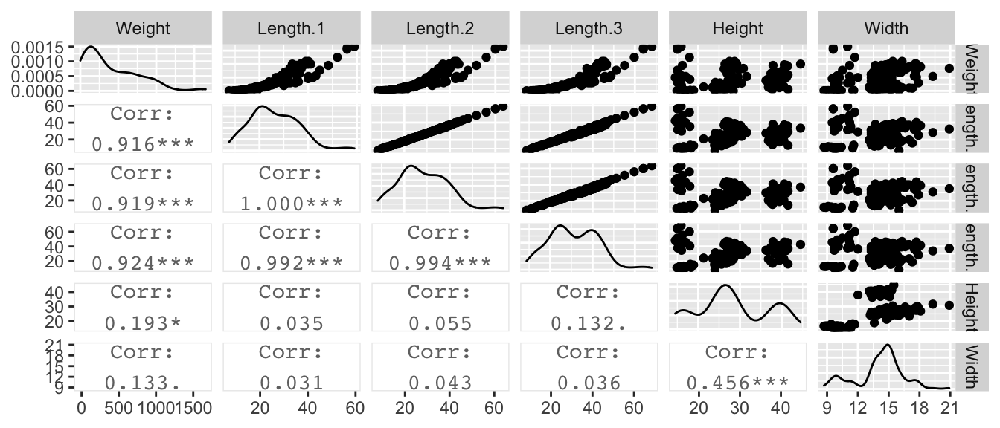

Chapter 9 Correlated Covariates
9.1 Interpretation with Correlated Covariates
The standard interpretation of the slope parameter is that \(\beta_{j}\) is the amount of increase in \(y\) for a one unit increase in the \(j\)th covariate, provided that all other covariates stayed the same.
The difficulty with this interpretation is that covariates are often related, and the phrase “all other covariates stayed the same” is often not reasonable. For example, if we have a dataset that models the mean annual temperature of a location as a function of latitude, longitude, and elevation, then it is not physically possible to hold latitude, and longitude constant while changing elevation.
One common issue that make interpretation difficult is that covariates can be highly correlated.
Perch Example: We might be interested in estimating the weight of a fish based off of its length and width. The dataset we will consider is from fishes are caught from the same lake (Laengelmavesi) near Tampere in Finland. The following variables were observed:
| Variable | Interpretation |
|---|---|
Weight |
Weight (g) |
Length.1 |
Length from nose to beginning of Tail (cm) |
Length.2 |
Length from nose to notch of Tail (cm) |
Length.3 |
Length from nose to tip of tail (cm) |
Height |
Maximal height as a percentage of Length.3 |
Width |
Maximal width as a percentage of Length.3 |
Sex |
0=Female, 1=Male |
Species |
Which species of perch (1-7) |
We first look at the data and observe the expected relationship between length and weight.
# File location on the internet or on my local computer.
file <- 'https://raw.githubusercontent.com/dereksonderegger/571/master/data-raw/Fish.csv'
file <- '~/github/571/data-raw/Fish.csv'
fish <- read.table(file, header=TRUE, skip=111, sep=',') %>%
filter( !is.na(Weight) )
### generate a pairs plot in a couple of different ways...
# pairs(fish)
# pairs( Weight ~ Length.1 + Length.2 + Length.3 + Height + Width, data=fish )
# pairs( Weight ~ ., data=fish )
fish %>%
dplyr::select(Weight, Length.1, Length.2, Length.3, Height, Width) %>%
GGally::ggpairs(upper=list(continuous='points'),
lower=list(continuous='cor'))
Naively, we might consider the linear model with all the length effects present.
##
## Call:
## lm(formula = Weight ~ Length.1 + Length.2 + Length.3 + Height +
## Width, data = fish)
##
## Residuals:
## Min 1Q Median 3Q Max
## -302.22 -79.72 -39.88 92.63 344.85
##
## Coefficients:
## Estimate Std. Error t value Pr(>|t|)
## (Intercept) -724.539 77.133 -9.393 <2e-16 ***
## Length.1 32.389 45.134 0.718 0.4741
## Length.2 -9.184 48.367 -0.190 0.8497
## Length.3 8.747 16.283 0.537 0.5919
## Height 4.947 2.768 1.787 0.0759 .
## Width 8.636 6.972 1.239 0.2174
## ---
## Signif. codes: 0 '***' 0.001 '**' 0.01 '*' 0.05 '.' 0.1 ' ' 1
##
## Residual standard error: 132.9 on 152 degrees of freedom
## Multiple R-squared: 0.8675, Adjusted R-squared: 0.8631
## F-statistic: 199 on 5 and 152 DF, p-value: < 2.2e-16This is crazy. There is a negative relationship between Length.2 and Weight. That does not make any sense unless you realize that this is the effect of Length.2 assuming the other covariates are in the model and can be held constant while changing the value of Length.2, which is obviously ridiculous.
If we remove the highly correlated covariates then we see a much better behaved model
##
## Call:
## lm(formula = Weight ~ Length.2 + Height + Width, data = fish)
##
## Residuals:
## Min 1Q Median 3Q Max
## -306.14 -75.11 -36.45 89.54 337.95
##
## Coefficients:
## Estimate Std. Error t value Pr(>|t|)
## (Intercept) -701.0750 71.0438 -9.868 < 2e-16 ***
## Length.2 30.4360 0.9841 30.926 < 2e-16 ***
## Height 5.5141 1.4311 3.853 0.000171 ***
## Width 5.6513 5.2016 1.086 0.278974
## ---
## Signif. codes: 0 '***' 0.001 '**' 0.01 '*' 0.05 '.' 0.1 ' ' 1
##
## Residual standard error: 132.3 on 154 degrees of freedom
## Multiple R-squared: 0.8669, Adjusted R-squared: 0.8643
## F-statistic: 334.2 on 3 and 154 DF, p-value: < 2.2e-16When you have two variables in a model that are highly positively correlated, you often find that one will have a positive coefficient and the other will be negative. Likewise, if two variables are highly negatively correlated, the two regression coefficients will often be the same sign.
In this case the sum of the three length covariate estimates was approximately \(31\) in both cases, but with three length variables, the second could be negative the third be positive with approximately the same magnitude and we get approximately the same model as with both the second and third length variables missing from the model.
\[ y_i = \beta_0 + \beta_1 L_1 + \beta_2 L_2 + \beta_3 L_3 + \epsilon_i\] but if the covariates are highly correlated, then approximately \(L_1 = L_2 = L_3 = L\) and this equation could be written:
\[ y_i = \beta_0 + (\beta_1 + \beta_2 + \beta_3) L_3 + \epsilon_i\] \[ y_i = \beta_0 + \left[(\beta_1-10) + \beta_2 + (\beta_3+10)\right] L_3 + \epsilon_i\]
In general, you should be very careful with the interpretation of the regression coefficients when the covariates are highly correlated.
9.2 Solutions
In general you have three ways to deal with correlated covariates.
Select one of the correlated covariates to include in the model. You could either select the covariate with the highest correlation with the response. Alternatively you could use your scientific judgment as to which covariate is most appropriate.
You could create an index variable that combines the correlated covariates into a single amalgamation variable. For example, we could create \(L = (L_1 + L_2 + L_3)/3\) to be the average of the three length measurements.
We could use some multivariate method such as Principle Components Analysis to inform us on how to make the index variable. We won’t address this in this here, though.
Just not worry about it. Remember, the only problem is with the interpretation of the parameters. If we only care about making accurate predictions within the scope of our data, then including highly correlated variables doesn’t matter. However, if you are making predictions away from the data, the flipped signs might be a big deal.